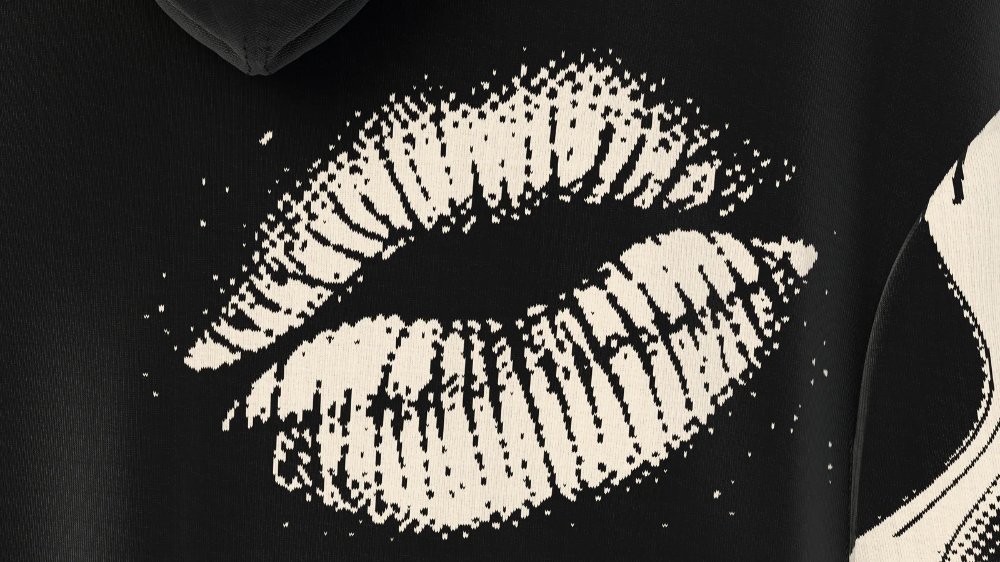
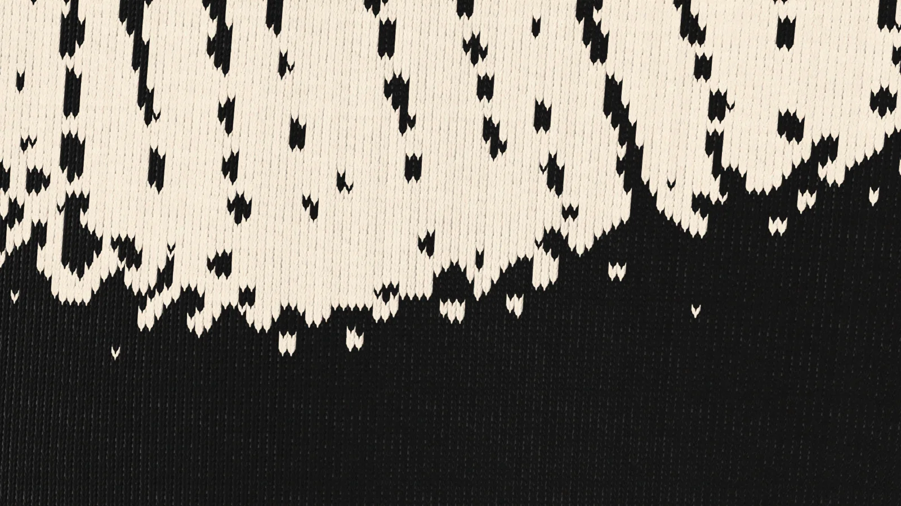

STAND-IN · img/heliodora/front/master.* (departments/apparel/new-pieces-2026-11/build/muse-allover/site/muse_front_16k.png; 16K, 8640 × 15360)
STAND-IN · img/heliodora/front/master.* (departments/apparel/new-pieces-2026-11/build/muse-allover/site/muse_front_16k.png; 16K, 8640 × 15360) STAND-IN · img/heliodora/three-quarter/master.* (three-quarter view, 8K; 8K, 4320 × 7680)
STAND-IN · img/heliodora/three-quarter/master.* (three-quarter view, 8K; 8K, 4320 × 7680) STAND-IN · img/heliodora/back/master.* (back view, 8K; 8K, 4320 × 7680)
STAND-IN · img/heliodora/back/master.* (back view, 8K; 8K, 4320 × 7680)Where it is going
The lobby
The curtain to the house, tied back.
Chapter I · Knitwear
Heliodora
Knit hoodie
Scroll to walk around it
Chapter I
Heliodora
Knit hoodie
Knitted edge to edge, as a close-up fills the screen: her face on the front, her hair over the shoulders, and on the back the kiss, signed with the Ö.
- KNIT
- 28-GAUGE DOUBLE JACQUARD
- WEIGHT
- 300 GSM
- YARN
- 30S COMBED COTTON
- COLOURWAY
- BLACK / CREAM
- SIZE
- S · M · L · XL · XXL
USD 400 pre-sale USD 345
Keep a seatThe register sees the pre-sale first.
Details
- Pre-sale
- Made to order. We email your delivery date once production is confirmed. Cancel for a full refund any time before production starts.
- Returns
- Size exchanges within 14 days of delivery, unworn and with tags.
- Care
- Wash cold, inside out, on a gentle cycle. Dry flat. No tumble dryer, no bleach. Care
- Size
- The measurements
 STAND-IN · img/heliodora/world/master.* (C1: the last frame, the world plate (the lobby); 8K, 5760 × 7680)
STAND-IN · img/heliodora/world/master.* (C1: the last frame, the world plate (the lobby); 8K, 5760 × 7680)Where it is going · C1
The lobby
The curtain to the house, tied back.
On the screen in the film, the picture is tomorrow: each piece in the place it is going, with one place kept for someone.
The filmClose

The kiss on the back

STAND-IN · img/heliodora/detail-material/master.* (the knit at stitch scale, 8K close-up; 8K, 7680 × 4320)The knit at stitch scale
The cuff, where her hair thins to single dots
The maker’s notes
Heliodora, the Muse
- It begins as a chart, one value for each stitch: the front alone is 722 stitches by 1,030.
- It is knitted as a 28-gauge double jacquard in black and cream, 11 stitches by 16 rows to the centimetre.
- Her portrait is the front; her hair runs onto the sleeves and thins to single dots by the cuff.
- On the back, one kiss, 208 by 133 mm, tilted 12 degrees, the mark beside it at 6.0 by 4.8 cm.
- Round them, 80 mm of plain black. Dust rises from the hem and stops at 31% of the height.
- The hood is plain black. It closes on black cords through gold eyelets, ending in gold tips.
Behind it: a second bed of stitches. Every stitch is knitted front and back, so no loose thread crosses the inside.
Read the bookThe packaging
The house lights go down. Black board, cream tissue the colour of the screen, and one gold disc between you and the first scene.
 STAND-IN · img/shared/pack-closed/master.* (packaging/chapter1/renders: closed (the approved final, 3840 px); 8K, 7680 × 4320)
STAND-IN · img/shared/pack-closed/master.* (packaging/chapter1/renders: closed (the approved final, 3840 px); 8K, 7680 × 4320)The closed box, its band and the gold disc
 STAND-IN · img/shared/pack-open/master.* (packaging/chapter1/renders: open (the approved final, 3840 px); 8K, 7680 × 4320)
STAND-IN · img/shared/pack-open/master.* (packaging/chapter1/renders: open (the approved final, 3840 px); 8K, 7680 × 4320)The open box, the piece folded in cream tissue
 STAND-IN · img/shared/pack-disc/master.* (packaging/chapter1/renders: disc (the approved final, 3840 px); 8K, 7680 × 4320)
STAND-IN · img/shared/pack-disc/master.* (packaging/chapter1/renders: disc (the approved final, 3840 px); 8K, 7680 × 4320)The gold disc on the band
 STAND-IN · img/shared/pack-shopping/master.* (packaging/chapter1/renders: shopping (the approved final, 3840 px); 8K, 7680 × 4320)
STAND-IN · img/shared/pack-shopping/master.* (packaging/chapter1/renders: shopping (the approved final, 3840 px); 8K, 7680 × 4320)The shopping bag with cream tissue
 STAND-IN · img/shared/pack-trims/master.* (packaging/chapter1/renders: trims (the approved final, 3840 px); 8K, 7680 × 4320)
STAND-IN · img/shared/pack-trims/master.* (packaging/chapter1/renders: trims (the approved final, 3840 px); 8K, 7680 × 4320)The hang tag, the card and the sealed envelope